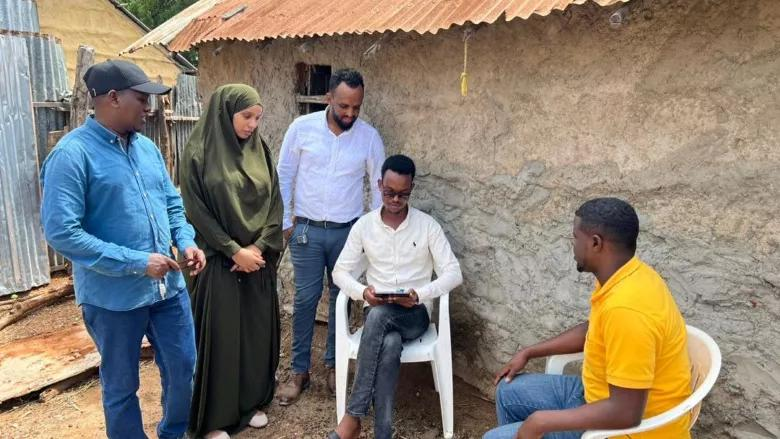
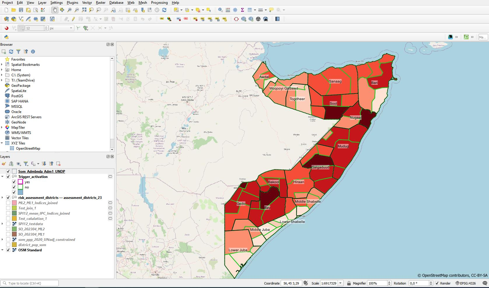
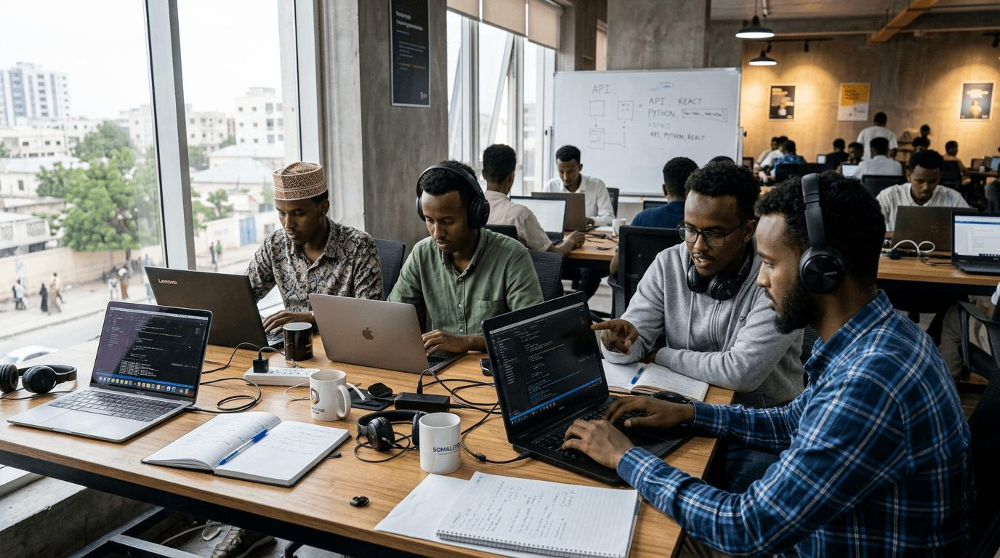

A selection of research, data, and development work. Contact me for more details about these projects.

Household-level data collection with community members, supporting humanitarian and development programs through accurate, on-the-ground data.

Built district-level risk maps in QGIS using population and assessment data to support program planning across Somali regions.

Collaborated with a team building web applications, working across API integration, front-end design, and version control.